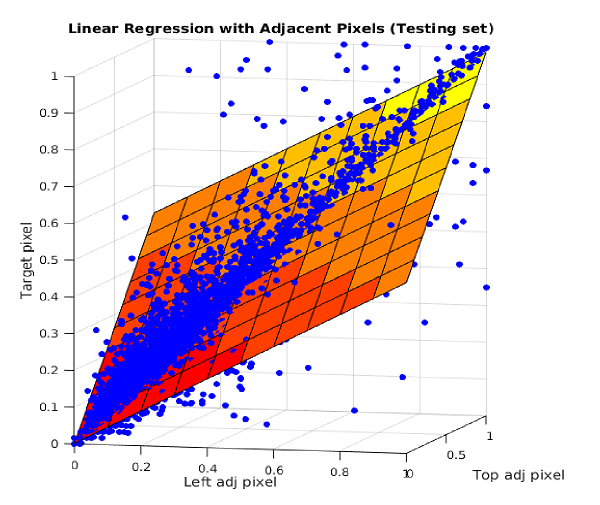

Pattern recognition is all about figuring out trends of data and what the trends represent. Often times if there is a big enough
data set then the trends that come out of it can be deconstructed to represent an individual component of the whole.
For example, if you have a large set of social data and find some patterns within it, you can start to make strong predictions
on what individuals who fit inside that pattern are doing!
Pattern recognition also tries to find patterns when no known
trends are shown. The other half of pattern recognition is finding the patterns that nobody knows about! A computer can be trained
to look for interesting and complex trends that a human would have trouble conceieving of!